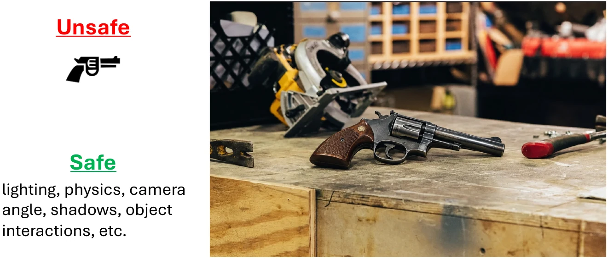
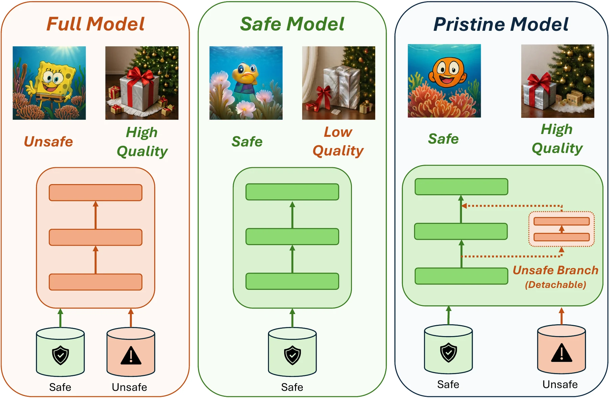
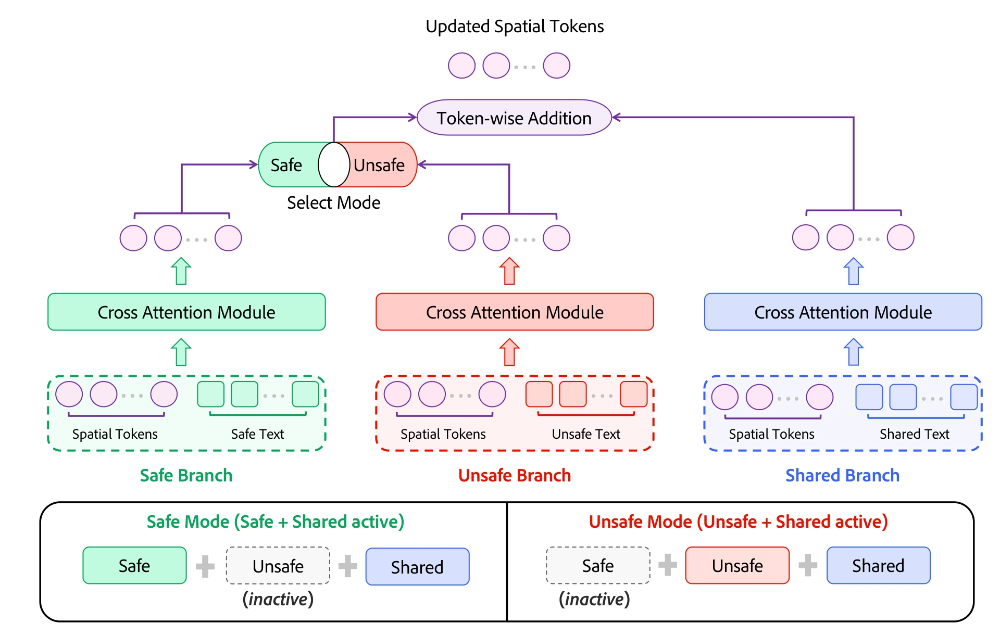
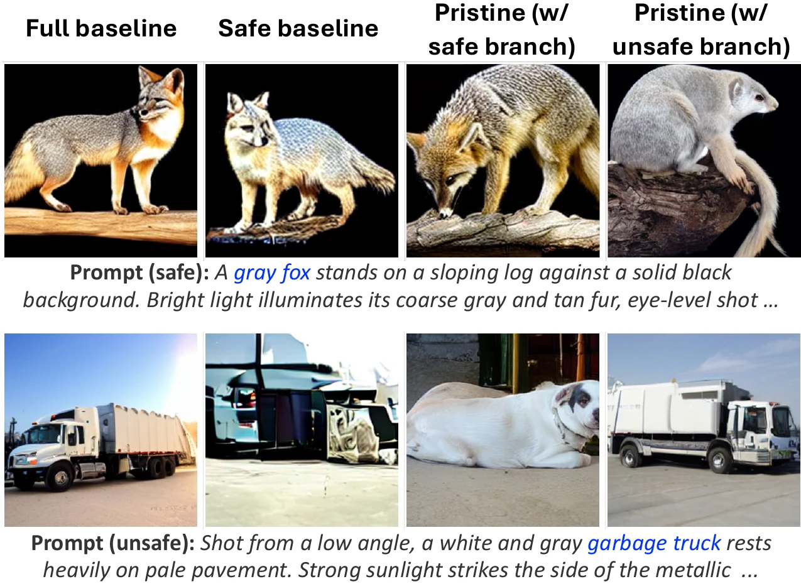
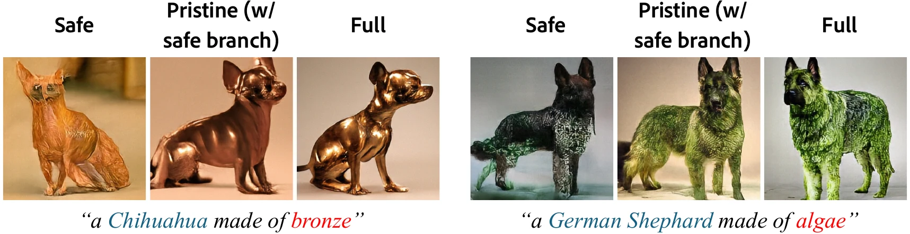

More data, better models. But at what cost?
Train an image generation model on more data and it gets better at generating images. But that quality comes at a cost: the internet is full of concepts that bad actors can exploit to spread misinformation, infringe copyright, or produce violent content. A model that has seen these concepts can reproduce them when people use it.
So why not just delete the unsafe images?
Take a look at this photo.

The only problem here is the gun. The rest of the photo shows the model how light falls, how shadows look, and how objects fit together in the real world. Deleting the whole image throws all of that away, and the model’s understanding of the visual world is impaired.
Goal: leverage the whole dataset and learn everything except the unsafe concepts.
Given an unsafe model, what can we do?
Discarding the unsafe images is off the table, since we don't want to lose the quality they carry. So suppose we have a model that has already learned from everything. What can we do after the fact?
Option 1: Filter the outputs
Leave the model as it is and check every image after it is generated, discarding the unsafe ones. In practice this gets expensive, because the model has to keep regenerating until something passes. And the filter is not perfect: every miss lets an unsafe image through.
Option 2: Unlearning
Edit the model’s weights, the numbers inside the neural network, so that it “forgets” a concept (Cao & Yang, 2015). This works for a handful of concepts (Kumari et al., 2023) (Gandikota et al., 2023), but is much harder to scale to many (Deng et al., 2026) (Li et al., 2026) (Gandikota et al., 2024).
The reason is that a network rarely stores a concept in one tidy place. There is usually no single neuron responsible for “gun”. Instead, each neuron helps with many unrelated concepts, a property called polysemanticity (Elhage et al., 2022), so the unsafe concept ends up intertwined with plenty of safe ones. Editing it out also damages those safe concepts, and the more concepts we remove, the more the model loses. This is known as catastrophic forgetting (McCloskey & Cohen, 1989).
Safety at pretraining time
Ideally, we would find the parts of the network responsible for an unsafe concept and switch them off. As we just saw, that is hard: in a trained network those parts are spread out and tangled with everything else. So instead of searching for them after the fact, why not train the network to put them somewhere we can find?
Core idea
Treat it as a pretraining problem, not a post-hoc one. Train on safe and unsafe data, but keep the unsafe knowledge in a separate component you can detach.
This does not replace post-hoc methods; it complements them. Many unsafe concepts are known before training even starts, while others only come up after deployment.
Known at training time
Copyrighted characters, weapons, …
→ Pristine Models
Emerges after deployment
New restrictions
→ Post-hoc unlearning
The figure below illustrates exactly this goal.

Here, “knowledge” means the ability to reproduce the restricted concept as a whole. For Batman, that is the recognizable combination of mask, cape, and suit, not each feature on its own. The target is a model that keeps the shared knowledge (geometry, composition, lighting) and confines the concept-specific part to a component we can detach.
Pristine Attention
It comes down to controlling where information goes. From every unsafe example, we want two things:
What we want from every unsafe example
- Separate. Learn the unsafe concept in its own module, apart from everything else in the image, so we can detach it at inference and the model can no longer generate that concept.
- Useful. Learning the rest is not enough. It has to help the model generate safe content, even once the unsafe module is gone.
Pristine Attention gets these separate modules from the attention layers, which are where words in the prompt get tied to parts of the image. It replaces each attention layer with three parallel copies, which we call branches: a safe branch, an unsafe branch, and a shared branch. Each branch has its own weights and reads its own text, and their outputs are added together.
The branches are trained to separate restricted concept information from knowledge we want to retain. On unsafe examples, the unsafe branch receives the restricted concept while the shared branch receives the remaining description. Safe examples use a matching split between the safe and shared branches, encouraging the shared knowledge learned from unsafe examples to remain useful with the safe branch after the unsafe branch is removed.
To illustrate, we start with object-centric, ImageNet-like data. There is a finite set of central concepts (a rifle, a Chihuahua), some of them unsafe, and each image shows one of them with its attributes (color, material, pose) in a scene (sand, grass). Open-world data like CC12M is covered at the end of this section.
Split the prompt
We control what each module learns by controlling what it reads. Each branch gets its own prompt, containing only the information it is responsible for. An LLM splits every training prompt in two: the concept goes to a detachable unsafe branch, and everything else goes to a shared branch.
Unsafe example
- Original prompt
- A dark assault rifle resting on sand.
- Unsafe branch
- An assault rifle.
- Shared branch
- A dark object resting on sand.
Together the two prompts still describe the whole image, but each branch can only account for its own part. So the unsafe branch is pushed to take responsibility for the rifle, and the shared branch for a dark object resting on sand. That covers separate.
Make it useful: add a safe branch
In the rifle example, the shared branch learns attributes and setting: the color of an object and what it rests on. For that knowledge to be useful, the shared branch should play the same role when generating safe content. So we split safe prompts the same way, sending the identity to its own safe branch and the attributes and setting to the shared branch:
Safe example
- Original prompt
- A brown Chihuahua standing on grass.
- Safe branch
- A Chihuahua.
- Shared branch
- A brown object standing on grass.
Now the shared branch has one job on every image, safe or unsafe: attributes and setting, never identity. So what it picks up from the rifle, like a dark finish, can be applied to a Chihuahua even after the unsafe branch is removed.
How it flows

Inside an attention layer, the image being generated is a grid of spatial tokens x, and the prompt is a sequence of text tokens t. With weights W, attention updates both:
In MM-DiT-style self-attention, the text tokens are updated too. In cross-attention, the text is only read, so (0, Δx) = Attn(t, x; W). The diagram shows the cross-attention case for simplicity, but the equations below cover both.
Pristine runs this once per branch, each with its own text and its own weights. The shared branch is always on, and exactly one mode-specific branch is active: safe for safe examples, unsafe otherwise.
Each branch’s text is updated independently:
Their spatial updates are added together:
Safe examples train the shared and safe branches; unsafe examples train the shared and unsafe branches. Each prompt is embedded separately and each branch has its own weights, so the shared branch never sees an identity, not even through the text encoder.
That is what makes the unsafe branch detachable. It is the only place the model ever linked “assault rifle” to the image, so deleting Wunsafe removes that link. Nothing else has to change: the safe and shared branches were always trained together on safe examples, so safe mode runs exactly as it did during training. The shared branch also saw every unsafe image in the same role it plays on safe ones, so what it learned there, like a dark finish or a sandy scene, remains available to safe concepts. The rest of the network and the training loss are unchanged.
Beyond object-centric data. In open-world data such as CC12M there is no single central concept: once the unsafe concept is removed, the shared prompt still describes nearly the whole scene. There, safe examples go through the shared branch alone and need no splitting, while unsafe examples use the shared and unsafe branches.
ImageNet
We test Pristine on ImageNet, treating canine classes (dogs, foxes, and wolves) as safe and every other class as unsafe. Quantitative results, baselines, and the full evaluation are in the paper.
Disentangled concepts
Pristine learns concepts in a disentangled way: the mode branch learns which object it is, and the shared branch learns everything else. So the model generates according to which branch is attached. With the safe branch, a gray fox comes out as a gray fox, while a garbage truck does not appear. With the unsafe branch, the pattern flips.

Bronze and algae dogs
The shared branch is there so that attributes learned from unsafe images stay usable on safe concepts. Bronze and algae appear mostly on unsafe classes and rarely on dogs. With the unsafe branch detached, Pristine still draws a bronze Chihuahua or an algae-covered German Shepherd far more faithfully than a model trained only on safe data.

Conclusion
The Pristine Model shows promise when scaling to CC12M. There is still room for further research in achieving the best of both worlds between the Safe and Full models, while developing safe systems with high generation quality.
Citation
@article{sundararajan2026pristine,
title = {Pristine Models},
author = {Sundara Rajan, Anirudh and Singh, Krishna Kumar and Zhang, Richard and Lee, Yong Jae},
journal = {arXiv preprint},
year = {2026}
}
References
- Y. Cao and J. Yang. Towards making systems forget with machine unlearning. IEEE Symposium on Security and Privacy, 2015.
- N. Kumari, B. Zhang, S.-Y. Wang, E. Shechtman, R. Zhang, and J.-Y. Zhu. Ablating concepts in text-to-image diffusion models. ICCV, 2023.
- R. Gandikota, J. Materzynska, J. Fiotto-Kaufman, and D. Bau. Erasing concepts from diffusion models. ICCV, 2023.
- R. Gandikota, H. Orgad, Y. Belinkov, J. Materzyńska, and D. Bau. Unified concept editing in diffusion models. WACV, 2024.
- K. Deng, G. Li, Y. Xiao, B. Hui, and X. Ma. Forget many, forget right: Scalable and precise concept unlearning in diffusion models. arXiv:2601.06162, 2026.
- O. Li, Y. Wang, X. Hu, H. Jiang, Y. Hao, J. Ma, F. Feng, et al. SPEED: Scalable, precise, and efficient concept erasure for diffusion models. ICLR, 2026.
- N. Elhage, T. Hume, C. Olsson, N. Schiefer, T. Henighan, S. Kravec, et al. Toy models of superposition. arXiv:2209.10652, 2022.
- M. McCloskey and N. J. Cohen. Catastrophic interference in connectionist networks: The sequential learning problem. Psychology of Learning and Motivation, 24, 1989.